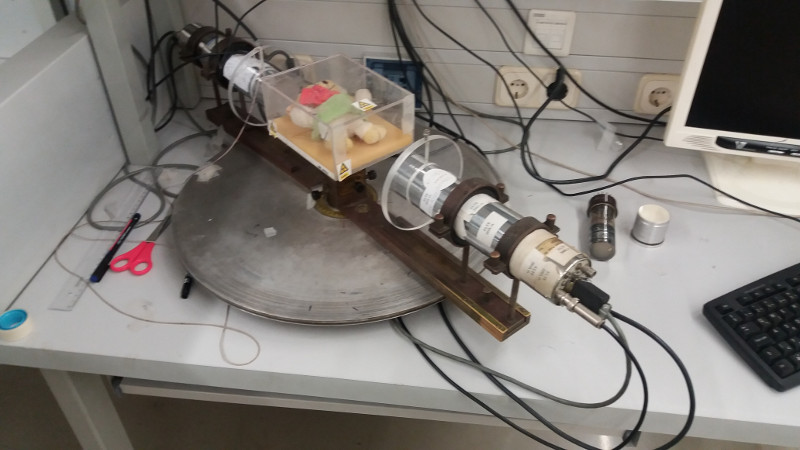
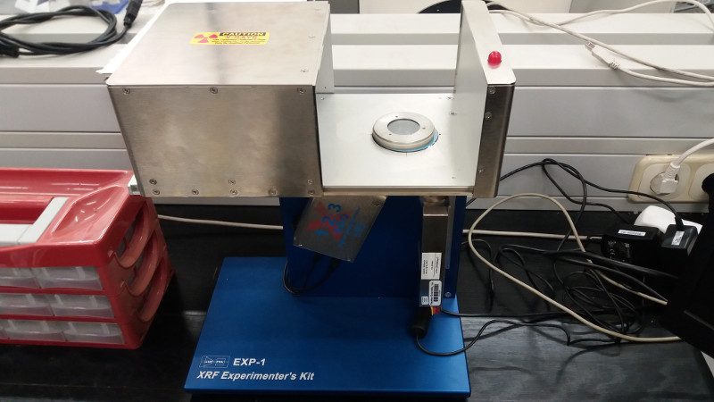
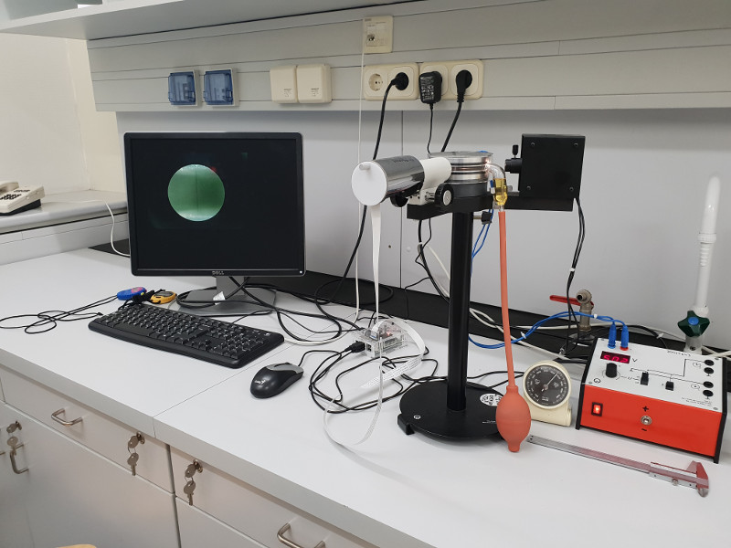
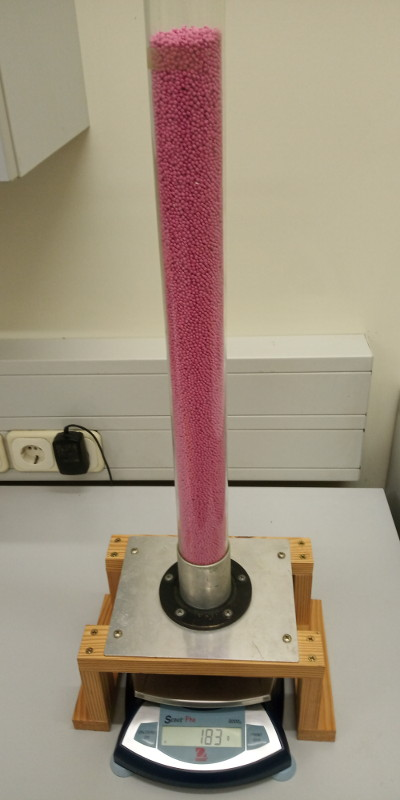

Modern Fizika Laboratórium
Főoldal
Mérések
Csoportbeosztások
Galéria

PET mérés elrendezése

Röntgen-fluoreszcencia mérési elrendezés

Millikan kísérlet elrendezése

Granuláris anyagok egy csőben